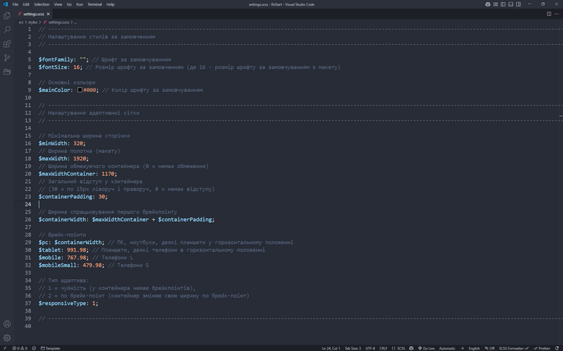
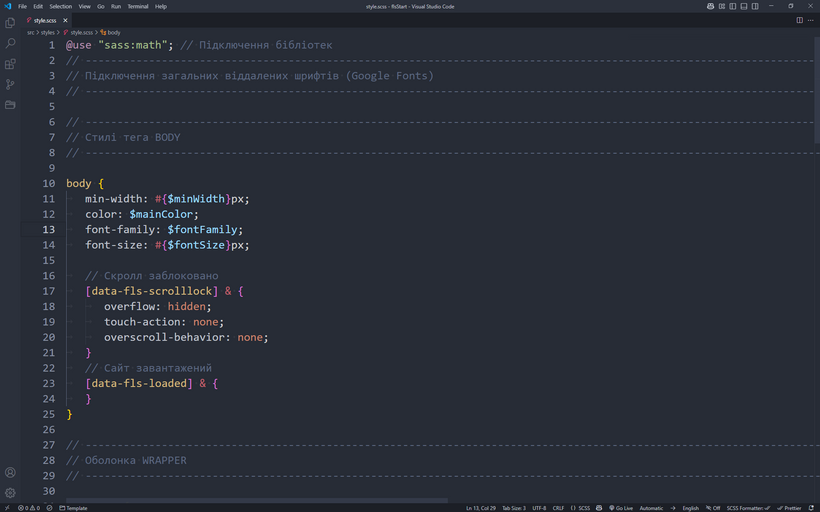

В "Чертогах Фрілансера" 4 (далі ЧФ4) використовується препроцесор SASS в синтаксісі SCSS, що дає змогу використовувати широкий та потужний функціонал для створення стилів проєкту та їх керування.
Завдяки компонентному підходу ЧФ4, є можливість описувати стилі для кожної сторінки та кожного блоку окремо, у файлах відповідного компоненту. Це надасть змогу ситемі роздаляти стилі по сторінках, що позитивно впливає на оптимізацію проєкту. Окремі файли стилів компонентів ви знайдете у папці src/components
Для зручності працювати зі стилями варто використовуючи значення у PX (пікселях), та, де це потрібно, у % (відсотках) та EM. Система автоматично переведе усі значення в PX у відносні одиниці REM в режимі продакшн (якщо це увімкнено в налаштуваннях ЧФ4)
Файл src/styles/settings.scss є головним файлом налаштувань значень стилів за замовченням, роботи адаптивної сітки та міксінів, зокрема таких як "Чуйна властивість"
Файл автоматично підключається до кожного SCSS-проєкту, та саме з цього файлу варто починати роботу над інтерфейсом
Файл settings.scss
Налаштування сімейства, розміру та кольору шрифту за замовчуванням
Для того, щоб працювати зі шрифтами, спочатку потрібно їх підключити. Всі дії докладно описані у цій статті.
Після виконання дій щодо підключення шрифтів необхідно вказати значення для наступних змінних
$fontFamily - ім'я сімейства шрифт за замовчуванням. Вказуємо ім'я основного шрифту у проекті та його тип, наприклад:
$fontFamily: "Montserrat, sans-serif";
$fontSize - розмір шрифту за замовчуванням. Слід вказати значення розміру шрифту за замовчуванням у пікселях (тільки число без px):
$fontSize: 16;
$mainColor - колір шрифту за замовчуванням. Вказуємо код кольору:
$mainColor: #000;
Також, тут можна додавати й інші змінні, у тому числі з кодами кольорів створюючи кольорову палітру проєкту
Налаштування адаптивної сітки
У ЧФ4 є можливість налаштувати обмежуючий контейнер на роботу як з адаптивною(чуйною) версткою, так і з версткою по брейкпоїнтах.
Перед початком робіт налаштовуємо наступні змінні:
$minWidth - мінімальна ширина вьюпорта (екрана), що підтримується проектом. Зазвичай це 320px, але з відмиранням старих пристроїв, це значення можна змінювати на будь-яке потрібне, вказуємо тільки число без px:
$minWidth: 320;
$maxWidth - ширина всього макета (полотна), не плутати з шириною контейнера, що обмежує. Як правило, дизайнери надають макети шириною 1920 чи 1440 пікселів, але це значення може бути будь-яким. Вимірюємо макет і вказуємо лише число без px:
$maxWidth: 1920;
$maxWidthContainer - ширина обмежуючого контейнера. Власне, це ширина контенту в макеті дизайну. Вимірюємо макет і вказуємо лише число без px:
$maxWidthContainer: 1170;
Якщо в макеті немає обмеження контенту, тобто контент розташований на всю ширину полотна (з відступами), то слід вказати значення 0 (нуль):
$maxWidthContainer: 0;
$containerPadding - загальний відступ (сума відступів ліворуч і праворуч) у обмежуючого контейнера. Вказуємо лише число без px:
$containerPadding: 30;
Якщо відступів немає, або ви хочете використовувати адаптивну властивість, слід вказати 0 (нуль):
$containerPadding: 0;
$containerWidth - ширина спрацьовування першого брейкпоїнту. Власне, це сума ширин обмежуючого контейнера та його відступів. Як правило, міняти тут нічого не потрібно.
$containerWidth: $maxWidthContainer + $containerPadding;
Вищезгадані змінні впливають і на функціонал чуйної властивості, який описаний в окремій статті
Налаштування брейкпоінтів
Налаштовуємо "стандартні" граничні ширини певних груп пристроїв:
$pc - ПК, ноутбуки, деякі планшети в горизонтальному положенні. Як правило, тут вказується змінна $containerWidth:
$pc: $containerWidth;
$tablet - планшети, деякі телефони у горизонтальному положенні. Зазвичай значення дорівнює 991.98px:
$tablet: 991.98;
$mobile - великі телефони. Зазвичай значення дорівнює 767.98px:
$mobile: 767.98;
$mobileSmall - маленькі телефони. Зазвичай значення дорівнює 479.98px:
$mobileSmall: 479.98;
Для швидкого виклику медіа-запиту з потрібним брейкпоінтом можна використовувати сніпети md1, md2, md3, md4. Или, для Mobile First, mmd1, mmd2, mmd3, mmd4
Налаштування типу адаптива (поведінка обмежуючого контейнера)
$responsiveType - налаштування типу адаптива (поведінка обмежуючого контейнера):
1 - чуйна. У контейнера немає брейкпоінтів, він звужується разом із браузером
2 - по брейкпоїтам. Контейнер змінює свою ширину за налаштованими брейкпоїнтами.
$responsiveType: 1;
Файл src/styles/style.scss є основним та загальним файлом стилів проєкту у стартовому шаблоні "Чертоги Фрілансера" 4. Тут знаходяться основні стилі тегу <body>, елементу з класом .wrapper, та обмежуючого контейнеру (клас *__container) на основі налаштувань в файлі settings.scss
Файл style.scss
Підключення віддалених шрифтів
На початку файлу є секція де, за потреби, слід підключати віддалені шрифти, наприклад з Google Fonts. Для цього зручно використовувати плагін для VS Code - Better Google Fonts for VS Code
Селектори та стилі
body {} - стилі основного тега <body>.
Також додано підготовку для появи у тега <html> двох класів:
[data-fls-scrolllock] - блокування скролу. Для цього вже написано відповідні стилі
[data-fls-loaded] - сайт завантажений. За цим класом ми можемо впливати на <body> для відображення контенту після повного завантаження даних
.wrapper {} - обгортка всього контенту на сторінці. Для неї написані стилі притискання підвалу до низу сторінки, важливий параметр overflow: clip; який не дасть з'явитися горизонтальному скролу сторінки, а також вирішення інших проблем
Нижчевказано селектор обмежуючого контейнера та його стилі, значення яких багато в чому складаються з налаштувань в файлі settings.scss
Стилі обмежувального контейнера будуть застосовуватися до будь-якого елемента, у класі якого є рядок "__container". Для зручності можна використовувати сніпет cnt
<div class="block__container"> ... </div>
Загальні стилі проєкту
Нижче усіх предвстановлених стилів ви можете додавати власні загальні стилі які застосуються до усіх сторінок проєкту.
У файлі налаштувань ЧФ4 в розділі styles ви знайдете:
tailwindcss - вмикає використання tailwindcss, при цьому файл src/styles/libs/reset.css буде вимкнений
pxtorem - вмикає автоматичну конвертацію PX в REM
critical - вмикає створення та інтеграцію в HTML критичних стилів
codesplit - розділяє стилі по сторінках проєкту
devfiles - створює не стиснуті файл стилів